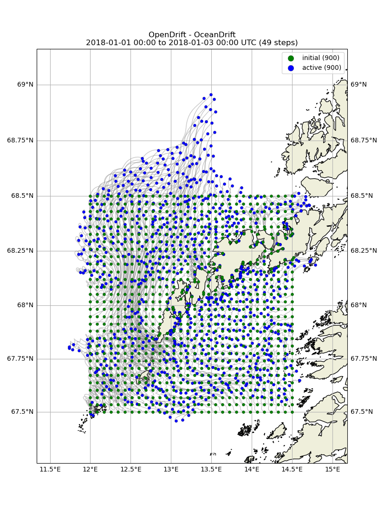
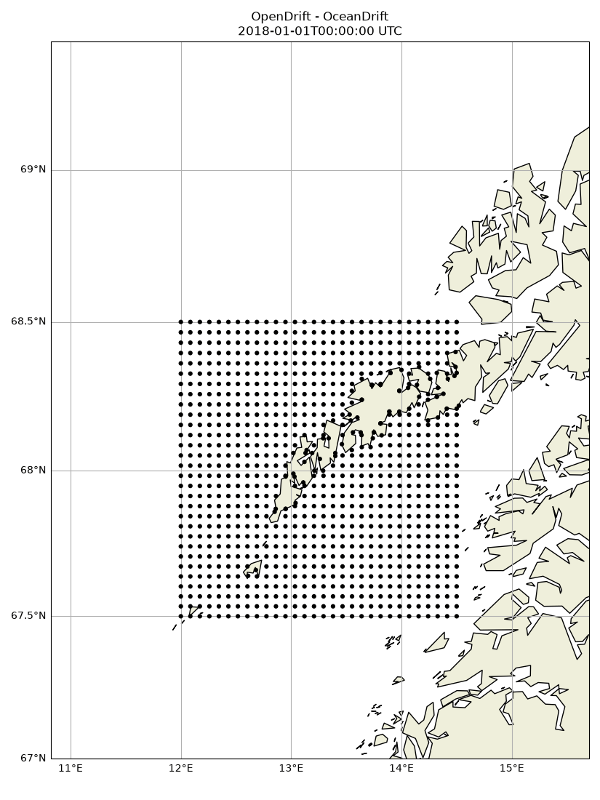

Note
Go to the end to download the full example code.
No stranding
import numpy as np
from opendrift import test_data_folder as tdf
from opendrift.readers import reader_netCDF_CF_generic
from opendrift.readers import reader_ROMS_native
from opendrift.models.oceandrift import OceanDrift
o = OceanDrift(loglevel=20) # Set loglevel to 0 for debug information
o.set_config('drift:max_speed', 3)
# This example works better using hourly input from Thredds than the daily data from test folder
reader_current = reader_netCDF_CF_generic.Reader('https://thredds.met.no/thredds/dodsC/cmems/topaz6/dataset-topaz6-arc-15min-3km-be.ncml')
#reader_current = reader_ROMS_native.Reader(tdf +
# '2Feb2016_Nordic_sigma_3d/Nordic-4km_SLEVELS_avg_00_subset2Feb2016.nc')
o.add_reader([reader_current])
o.set_config('general:coastline_action', 'previous')
11:38:23 INFO opendrift:576: OpenDriftSimulation initialised (version 1.14.6 / v1.14.6-7-g47225a3)
11:38:23 INFO opendrift.readers:63: Opening file with xr.open_dataset
11:38:25 INFO opendrift.readers.reader_netCDF_CF_generic:332: Detected dimensions: {'x': 'x', 'y': 'y', 'time': 'time'}
Seeding elements on a grid
lons = np.linspace(12, 14.5, 30)
lats = np.linspace(67.5, 68.5, 30)
lons, lats = np.meshgrid(lons, lats)
lon = lons.ravel()
lat = lats.ravel()
time = reader_current.start_time
o.seed_elements(lon, lat, radius=0, number=30*30, time=time)
o.run(steps=24*2, time_step=3600)
11:38:25 INFO opendrift.models.basemodel.environment:203: Adding a global landmask from GSHHG
11:38:29 INFO opendrift.models.basemodel.environment:227: Fallback values will be used for the following variables which have no readers:
11:38:29 INFO opendrift.models.basemodel.environment:230: x_wind: 0.000000
11:38:29 INFO opendrift.models.basemodel.environment:230: y_wind: 0.000000
11:38:29 INFO opendrift.models.basemodel.environment:230: upward_sea_water_velocity: 0.000000
11:38:29 INFO opendrift.models.basemodel.environment:230: ocean_vertical_diffusivity: 0.000000
11:38:29 INFO opendrift.models.basemodel.environment:230: sea_surface_wave_significant_height: 0.000000
11:38:29 INFO opendrift.models.basemodel.environment:230: sea_surface_wave_stokes_drift_x_velocity: 0.000000
11:38:29 INFO opendrift.models.basemodel.environment:230: sea_surface_wave_stokes_drift_y_velocity: 0.000000
11:38:29 INFO opendrift.models.basemodel.environment:230: ocean_mixed_layer_thickness: 50.000000
11:38:29 INFO opendrift:1794: Skipping environment variable ocean_vertical_diffusivity because of condition ['drift:vertical_mixing', 'is', False]
11:38:29 INFO opendrift:1794: Skipping environment variable ocean_mixed_layer_thickness because of condition ['drift:vertical_mixing', 'is', False]
11:38:29 INFO opendrift:1805: Storing previous values of element property lon because of condition (('general:coastline_action', 'in', ['stranding', 'previous']), 'or', ('general:seafloor_action', 'in', ['previous']))
11:38:29 INFO opendrift:1805: Storing previous values of element property lat because of condition (('general:coastline_action', 'in', ['stranding', 'previous']), 'or', ('general:seafloor_action', 'in', ['previous']))
11:38:29 INFO opendrift:1813: Storing previous values of environment variable sea_surface_height because of condition ['drift:vertical_advection', 'is', True]
11:38:29 INFO opendrift:952: Using existing reader for land_binary_mask to move elements to ocean
11:38:31 INFO opendrift:984: Moving 81 out of 900 points from land to water
11:38:31 INFO opendrift:2101: 2018-01-01 00:00:00 - step 1 of 48 - 900 active elements (0 deactivated)
11:38:32 INFO opendrift:2101: 2018-01-01 01:00:00 - step 2 of 48 - 900 active elements (0 deactivated)
11:38:34 INFO opendrift:2101: 2018-01-01 02:00:00 - step 3 of 48 - 900 active elements (0 deactivated)
11:38:35 INFO opendrift:2101: 2018-01-01 03:00:00 - step 4 of 48 - 900 active elements (0 deactivated)
11:38:35 INFO opendrift:2101: 2018-01-01 04:00:00 - step 5 of 48 - 900 active elements (0 deactivated)
11:38:36 INFO opendrift:2101: 2018-01-01 05:00:00 - step 6 of 48 - 900 active elements (0 deactivated)
11:38:37 INFO opendrift:2101: 2018-01-01 06:00:00 - step 7 of 48 - 900 active elements (0 deactivated)
11:38:37 INFO opendrift:2101: 2018-01-01 07:00:00 - step 8 of 48 - 900 active elements (0 deactivated)
11:38:38 INFO opendrift:2101: 2018-01-01 08:00:00 - step 9 of 48 - 900 active elements (0 deactivated)
11:38:39 INFO opendrift:2101: 2018-01-01 09:00:00 - step 10 of 48 - 900 active elements (0 deactivated)
11:38:39 INFO opendrift:2101: 2018-01-01 10:00:00 - step 11 of 48 - 900 active elements (0 deactivated)
11:38:40 INFO opendrift:2101: 2018-01-01 11:00:00 - step 12 of 48 - 900 active elements (0 deactivated)
11:38:41 INFO opendrift:2101: 2018-01-01 12:00:00 - step 13 of 48 - 900 active elements (0 deactivated)
11:38:41 INFO opendrift:2101: 2018-01-01 13:00:00 - step 14 of 48 - 900 active elements (0 deactivated)
11:38:42 INFO opendrift:2101: 2018-01-01 14:00:00 - step 15 of 48 - 900 active elements (0 deactivated)
11:38:43 INFO opendrift:2101: 2018-01-01 15:00:00 - step 16 of 48 - 900 active elements (0 deactivated)
11:38:43 INFO opendrift:2101: 2018-01-01 16:00:00 - step 17 of 48 - 900 active elements (0 deactivated)
11:38:44 INFO opendrift:2101: 2018-01-01 17:00:00 - step 18 of 48 - 900 active elements (0 deactivated)
11:38:45 INFO opendrift:2101: 2018-01-01 18:00:00 - step 19 of 48 - 900 active elements (0 deactivated)
11:38:45 INFO opendrift:2101: 2018-01-01 19:00:00 - step 20 of 48 - 900 active elements (0 deactivated)
11:38:46 INFO opendrift:2101: 2018-01-01 20:00:00 - step 21 of 48 - 900 active elements (0 deactivated)
11:38:47 INFO opendrift:2101: 2018-01-01 21:00:00 - step 22 of 48 - 900 active elements (0 deactivated)
11:38:47 INFO opendrift:2101: 2018-01-01 22:00:00 - step 23 of 48 - 900 active elements (0 deactivated)
11:38:48 INFO opendrift:2101: 2018-01-01 23:00:00 - step 24 of 48 - 900 active elements (0 deactivated)
11:38:49 INFO opendrift:2101: 2018-01-02 00:00:00 - step 25 of 48 - 900 active elements (0 deactivated)
11:38:50 INFO opendrift:2101: 2018-01-02 01:00:00 - step 26 of 48 - 900 active elements (0 deactivated)
11:38:50 INFO opendrift:2101: 2018-01-02 02:00:00 - step 27 of 48 - 900 active elements (0 deactivated)
11:38:51 INFO opendrift:2101: 2018-01-02 03:00:00 - step 28 of 48 - 900 active elements (0 deactivated)
11:38:52 INFO opendrift:2101: 2018-01-02 04:00:00 - step 29 of 48 - 900 active elements (0 deactivated)
11:38:52 INFO opendrift:2101: 2018-01-02 05:00:00 - step 30 of 48 - 900 active elements (0 deactivated)
11:38:54 INFO opendrift:2101: 2018-01-02 06:00:00 - step 31 of 48 - 900 active elements (0 deactivated)
11:38:54 INFO opendrift:2101: 2018-01-02 07:00:00 - step 32 of 48 - 900 active elements (0 deactivated)
11:38:55 INFO opendrift:2101: 2018-01-02 08:00:00 - step 33 of 48 - 900 active elements (0 deactivated)
11:38:56 INFO opendrift:2101: 2018-01-02 09:00:00 - step 34 of 48 - 900 active elements (0 deactivated)
11:38:56 INFO opendrift:2101: 2018-01-02 10:00:00 - step 35 of 48 - 900 active elements (0 deactivated)
11:38:57 INFO opendrift:2101: 2018-01-02 11:00:00 - step 36 of 48 - 900 active elements (0 deactivated)
11:38:58 INFO opendrift:2101: 2018-01-02 12:00:00 - step 37 of 48 - 900 active elements (0 deactivated)
11:38:58 INFO opendrift:2101: 2018-01-02 13:00:00 - step 38 of 48 - 900 active elements (0 deactivated)
11:38:59 INFO opendrift:2101: 2018-01-02 14:00:00 - step 39 of 48 - 900 active elements (0 deactivated)
11:39:00 INFO opendrift:2101: 2018-01-02 15:00:00 - step 40 of 48 - 900 active elements (0 deactivated)
11:39:00 INFO opendrift:2101: 2018-01-02 16:00:00 - step 41 of 48 - 900 active elements (0 deactivated)
11:39:01 INFO opendrift:2101: 2018-01-02 17:00:00 - step 42 of 48 - 900 active elements (0 deactivated)
11:39:02 INFO opendrift:2101: 2018-01-02 18:00:00 - step 43 of 48 - 900 active elements (0 deactivated)
11:39:02 INFO opendrift:2101: 2018-01-02 19:00:00 - step 44 of 48 - 900 active elements (0 deactivated)
11:39:03 INFO opendrift:2101: 2018-01-02 20:00:00 - step 45 of 48 - 900 active elements (0 deactivated)
11:39:04 INFO opendrift:2101: 2018-01-02 21:00:00 - step 46 of 48 - 900 active elements (0 deactivated)
11:39:04 INFO opendrift:2101: 2018-01-02 22:00:00 - step 47 of 48 - 900 active elements (0 deactivated)
11:39:05 INFO opendrift:2101: 2018-01-02 23:00:00 - step 48 of 48 - 900 active elements (0 deactivated)
Print and plot results
print(o)
o.plot()
#o.plot(background=['x_sea_water_velocity', 'y_sea_water_velocity'])
o.animation()

===========================
--------------------
Reader performance:
--------------------
https://thredds.met.no/thredds/dodsC/cmems/topaz6/dataset-topaz6-arc-15min-3km-be.ncml
0:00:30.8 total
0:00:00.0 preparing
0:00:30.7 reading
0:00:00.1 interpolation
0:00:00.0 interpolation_time
0:00:00.0 rotating vectors
0:00:00.0 masking
--------------------
global_landmask
0:00:01.6 total
0:00:00.0 preparing
0:00:01.6 reading
0:00:00.0 masking
--------------------
Performance:
42.1 total time
5.9 configuration
1.6 preparing main loop
1.6 moving elements to ocean
34.4 main loop
0.0 updating elements
0.0 cleaning up
--------------------
===========================
Model: OceanDrift (OpenDrift version 1.14.6)
900 active Lagrangian3DArray particles (0 deactivated, 0 scheduled)
-------------------
Environment variables:
-----
sea_floor_depth_below_sea_level
sea_surface_height
x_sea_water_velocity
y_sea_water_velocity
1) https://thredds.met.no/thredds/dodsC/cmems/topaz6/dataset-topaz6-arc-15min-3km-be.ncml
-----
land_binary_mask
1) global_landmask
-----
Readers not added for the following variables:
sea_surface_wave_significant_height
sea_surface_wave_stokes_drift_x_velocity
sea_surface_wave_stokes_drift_y_velocity
upward_sea_water_velocity
x_wind
y_wind
Discarded readers:
Time:
Start: 2018-01-01 00:00:00 UTC
Present: 2018-01-03 00:00:00 UTC
Calculation steps: 48 * 1:00:00 - total time: 2 days, 0:00:00
Output steps: 49 * 1:00:00
===========================
11:39:20 INFO opendrift:4636: Saving animation to /root/project/docs/source/gallery/animations/example_coastline_0.gif...
11:39:59 INFO opendrift:3071: Time to make animation: 0:00:39.948347

Total running time of the script: (1 minutes 41.833 seconds)